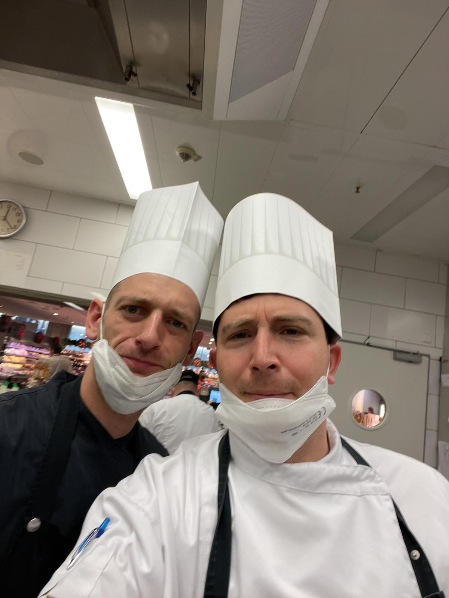
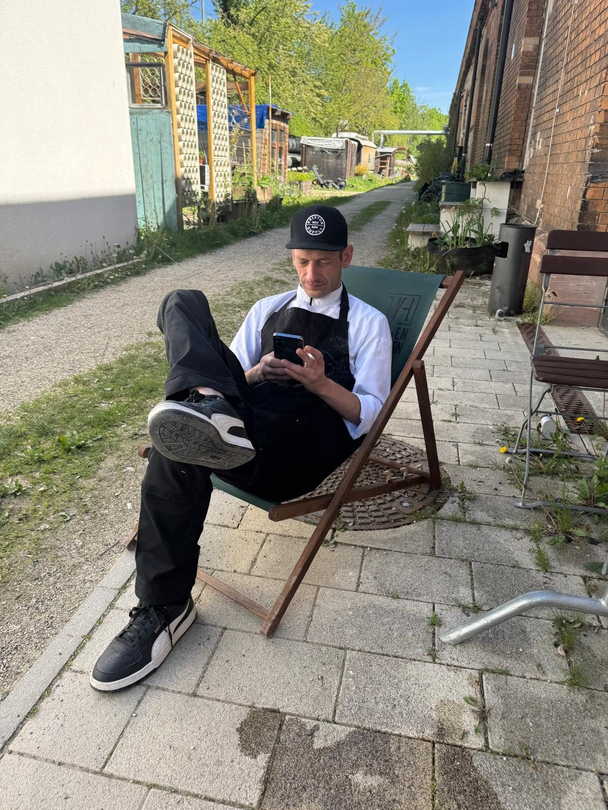
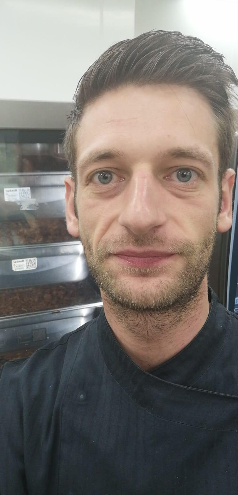

Его путь
Його шлях
Sein Weg
Не справка — портрет
Не довідка — портрет
Keine Chronik — ein Porträt

Повар
Кухар
Der Koch
Ярослав был поваром не по диплому, а по природе. Он проходил сезоны, в которые люди ломаются: смены по четырнадцать-шестнадцать часов, ночные поезда, ножи, наточенные перед каждым сервисом. Он кормил сотни и тысячи людей — от VIP-кейтеринга в музее Mercedes-Benz до Hugo Boss Open — и собирал вокруг себя команды поваров-фрилансеров, которых с гордостью называл «мои солдатики». Он закрывал заказы своим фирменным «Auftrag zu!!!», выбивал ребятам достойные ставки, платил им из своего кармана, когда заказчики тянули с деньгами, и возвращал в профессию поваров, которых жизнь из неё выбила. Он мог один вытащить мероприятие, с которого все ушли, — и рассказать об этом так, что все смеялись.
Ярослав був кухарем не за дипломом, а за природою. Він проходив сезони, на яких люди ламаються: зміни по чотирнадцять-шістнадцять годин, нічні потяги, ножі, нагострені перед кожним сервісом. Він годував сотні й тисячі людей — від VIP-кейтерингу в музеї Mercedes-Benz до Hugo Boss Open — і збирав навколо себе команди кухарів-фрілансерів, яких з гордістю називав «мої солдатики». Він закривав замовлення своїм фірмовим «Auftrag zu!!!», вибивав хлопцям гідні ставки, платив їм із власної кишені, коли замовники тягнули з грошима, і повертав у професію кухарів, яких життя з неї вибило. Він міг сам витягнути захід, з якого всі пішли, — і розповісти про це так, що всі сміялися.
Yaroslav war Koch nicht auf dem Papier, sondern von Natur aus. Er stand Saisons durch, an denen andere zerbrechen: Schichten von vierzehn, sechzehn Stunden, Nachtzüge, Messer, vor jedem Service frisch geschärft. Er bekochte Hunderte und Tausende — vom VIP-Catering im Mercedes-Benz Museum bis zu den Hugo Boss Open — und versammelte Teams von Freelancer-Köchen um sich, die er stolz „meine Soldaten“ nannte. Aufträge schloss er mit seinem legendären „Auftrag zu!!!“, er erkämpfte seinen Jungs faire Stundensätze, zahlte sie aus eigener Tasche, wenn Auftraggeber das Geld schuldig blieben, und holte Köche zurück in den Beruf, die das Leben herausgeworfen hatte. Er konnte ein Event allein retten, von dem alle davongelaufen waren — und hinterher so davon erzählen, dass alle lachten.

Друг
Друг
Der Freund
Дружить он умел так, как мало кто умеет. «Я брошу всё, чем занимаюсь, и поговорю с тобой» — это не фраза, он правда бросал. Он приезжал ночью, отдавал последнее, оставлял лазанью в холодильнике друга и ключи «там, где всегда». Он вёл честный счёт до копейки и радовался как ребёнок, когда выходило «по нулям», — а сверху всё равно докидывал подарок. Когда у его людей случалась беда, он говорил: «Ты не одна. Есть я, есть Игорь». И это всегда была правда.
Дружити він умів так, як мало хто вміє. «Я покину все, чим займаюся, і поговорю з тобою» — це не фраза, він справді кидав усе. Він приїжджав уночі, віддавав останнє, залишав лазанью в холодильнику друга і ключі «там, де завжди». Він вів чесний рахунок до копійки і радів як дитина, коли виходило «по нулях», — а зверху все одно докидав подарунок. Коли в його людей траплялася біда, він казав: «Ти не одна. Є я, є Ігор». І це завжди була правда.
Freundschaft konnte er wie kaum ein anderer. „Ich lasse alles stehen und liegen und rede mit dir“ — das war kein Spruch, er ließ wirklich alles stehen. Er kam mitten in der Nacht, gab sein Letztes, hinterließ Lasagne im Kühlschrank des Freundes und den Schlüssel „dort, wo immer“. Er führte ehrlich Buch bis auf den Cent und freute sich wie ein Kind, wenn es „auf null“ aufging — und legte trotzdem noch ein Geschenk obendrauf. Wenn seinen Menschen etwas zustieß, sagte er: „Du bist nicht allein. Es gibt mich, und es gibt Igor.“ Und das stimmte immer.

Мечтатель
Мрійник
Der Träumer
Из любого объявления у него рождался проект: ферма с гусями к Рождеству, фестиваль в лесу, фудтрак со свежей рыбой на берегу моря. Две мечты были самыми упрямыми: Испания — «Давай менять жизнь, а не себя гробить! Погнали — ты и я» — и Black Pearl, платформа, которая наведёт порядок в мире гастро-фриланса и защитит таких ребят, как его повара. Чёрный цвет, золото, одна чёрная жемчужина — он продумал всё и до последних недель сам писал код. Его девиз на этот счёт был короткий: «Сейчас или некогда».
З будь-якого оголошення в нього народжувався проєкт: ферма з гусьми до Різдва, фестиваль у лісі, фудтрак зі свіжою рибою на березі моря. Дві мрії були найупертішими: Іспанія — «Давай міняти життя, а не себе гробити! Погнали — ти і я» — і Black Pearl, платформа, яка наведе лад у світі гастро-фрілансу та захистить таких хлопців, як його кухарі. Чорний колір, золото, одна чорна перлина — він продумав усе і до останніх тижнів сам писав код. Його девіз був короткий: «Зараз або ніколи».
Aus jeder Kleinanzeige wurde bei ihm ein Projekt: ein Hof mit Gänsen zu Weihnachten, ein Festival im Wald, ein Foodtruck mit frischem Fisch am Meer. Zwei Träume waren die hartnäckigsten: Spanien — „Lass uns das Leben ändern, statt uns kaputtzumachen! Los — du und ich“ — und Black Pearl, die Plattform, die Ordnung in die Welt der Gastro-Freelancer bringen und Jungs wie seine Köche schützen sollte. Schwarz, Gold, eine einzige schwarze Perle — er hatte alles durchdacht und schrieb bis zuletzt selbst am Code. Sein Motto dazu war kurz: „Jetzt oder nie.“

Человек
Людина
Der Mensch
Он писал «пожайлусто» и «модно» вместо «можно», смеялся всегда тройным «😂😂😂», забыл однажды собственный день рождения и сообщил о нём на следующий день. Он мог упасть — в жизни это случалось не раз — и у него была на это своя философия: «Чем громче падаешь, тем быстрее встанешь». Он безмерно любил своих: семью, друзей, своих поваров, свою кошку. Он умел просить прощения первым. И каждому, кто был ему дорог, он успел сказать об этом прямо — словами, которые теперь читаются как завещание: «Ты для меня семья».
Він писав «пожайлусто» і «модно» замість «можно», сміявся завжди потрійним «😂😂😂», якось забув власний день народження і повідомив про нього наступного дня. Він міг упасти — в житті таке траплялося не раз — і мав на це власну філософію: «Чим гучніше падаєш, тим швидше встанеш». Він безмежно любив своїх: родину, друзів, своїх кухарів, свою кішку. Він умів першим просити пробачення. І кожному, хто був йому дорогий, він встиг сказати про це прямо — словами, які тепер читаються як заповіт: «Ти для мене сім'я».
Er schrieb Wörter auf seine eigene Art, lachte immer mit dreifachem „😂😂😂“ und vergaß einmal seinen eigenen Geburtstag — er erwähnte ihn beiläufig am Tag danach. Er konnte fallen — das Leben hat es ihm nicht geschenkt — und hatte seine eigene Philosophie dafür: „Je lauter du fällst, desto schneller stehst du wieder auf.“ Er liebte die Seinen grenzenlos: seine Familie, seine Freunde, seine Köche, seine Katze. Er konnte als Erster um Verzeihung bitten. Und jedem, der ihm wichtig war, hat er es noch direkt gesagt — mit Worten, die sich heute wie ein Vermächtnis lesen: „Du bist für mich Familie.“
Хронология
Хронологія
Chronik
Собрано по его собственным сообщениям — только то, что было на самом деле
Зібрано за його власними повідомленнями — лише те, що було насправді
Zusammengetragen aus seinen eigenen Nachrichten — nur das, was wirklich war
Начало
Початок
Der Anfang
Родился Ярослав Польский. Для семьи — Ярик, для друзей — «бро».
Народився Ярослав Польський. Для родини — Ярик, для друзів — «бро».
Yaroslav Polskyy wird geboren. Für die Familie — Yarik, für die Freunde — „Bro“.
Кухни Штутгарта
Кухні Штутгарта
Stuttgarter Küchen
Больше десяти лет за плитой: Feinkost Böhm, потом Gourmet Compagnie и лучшие кейтеринги города. Рядом — Игорь, который привёл его во фриланс и стал ему братом.
Понад десять років біля плити: Feinkost Böhm, згодом Gourmet Compagnie та найкращі кейтеринги міста. Поруч — Ігор, який привів його у фріланс і став йому братом.
Mehr als zehn Jahre am Herd: Feinkost Böhm, später Gourmet Compagnie und die besten Caterer der Stadt. An seiner Seite — Igor, der ihn ins Freelancing holte und ihm zum Bruder wurde.
«Мои солдатики»
«Мої солдатики»
„Meine Soldaten“
Он уже не просто повар — он собирает и ведёт команды поваров-фрилансеров. А заказы в рабочих чатах идут под именем, которому суждено стать мечтой: «Black Pearl Aufträge».
Він уже не просто кухар — він збирає й веде команди кухарів-фрілансерів. А замовлення в робочих чатах ідуть під іменем, якому судилося стати мрією: «Black Pearl Aufträge».
Er ist längst nicht mehr nur Koch — er stellt Teams von Freelancer-Köchen zusammen und führt sie. Und die Aufträge laufen in den Arbeitschats bereits unter dem Namen, der zum Traum werden sollte: „Black Pearl Aufträge“.
Испания
Іспанія
Spanien
Мечта, произнесённая вслух: «Давай менять жизнь, а не себя гробить! Погнали — ты и я». Дом у моря и фудтрак со свежей рыбой на берегу.
Мрія, промовлена вголос: «Давай міняти життя, а не себе гробити! Погнали — ти і я». Дім біля моря і фудтрак зі свіжою рибою на березі.
Ein Traum, laut ausgesprochen: „Lass uns das Leben ändern, statt uns kaputtzumachen! Los — du und ich.“ Ein Haus am Meer und ein Foodtruck mit frischem Fisch am Strand.
Отпуск с сыном
Відпустка з сином
Urlaub mit dem Sohn
«С сыном мы просто оторвались. Всё, что я хотел с этого отпуска, я получил. Моя семья тут».
«З сином ми просто відірвалися. Все, що я хотів від цієї відпустки, я отримав. Моя сім'я тут».
„Mein Sohn und ich haben es richtig krachen lassen. Alles, was ich von diesem Urlaub wollte, habe ich bekommen. Meine Familie ist hier.“
Black Pearl: от имени к делу
Black Pearl: від імені до справи
Black Pearl: vom Namen zur Sache
Ночью 13 августа он пишет первый план своего приложения: чёрный цвет, золото, одна чёрная жемчужина — платформа, которая наведёт порядок в гастро-фрилансе и защитит таких ребят, как его повара.
Вночі 13 серпня він пише перший план свого застосунку: чорний колір, золото, одна чорна перлина — платформа, яка наведе лад у гастро-фрілансі та захистить таких хлопців, як його кухарі.
In der Nacht des 13. August schreibt er den ersten Plan seiner App: Schwarz, Gold, eine einzige schwarze Perle — die Plattform, die Ordnung ins Gastro-Freelancing bringen und Jungs wie seine Köche schützen soll.
«Сейчас или некогда»
«Зараз або ніколи»
„Jetzt oder nie“
Польша, Мальорка, Барселона — и прямо с самолёта на смену в Wagenhallen. Жить и работать на полную, не выбирая одно из двух.
Польща, Мальорка, Барселона — і просто з літака на зміну у Wagenhallen. Жити і працювати на повну, не обираючи щось одне.
Polen, Mallorca, Barcelona — und direkt vom Flieger in die Schicht in den Wagenhallen. Leben und arbeiten mit voller Kraft, ohne sich für eines von beidem zu entscheiden.
Первый прототип
Перший прототип
Der erste Prototyp
В 23:01 он отправляет другу файл blackpearl.html — первый работающий прототип платформы, сделанный своими руками.
О 23:01 він надсилає другові файл blackpearl.html — перший робочий прототип платформи, зроблений власними руками.
Um 23:01 Uhr schickt er einem Freund die Datei blackpearl.html — den ersten funktionierenden Prototyp seiner Plattform, mit eigenen Händen gebaut.
Музей Mercedes-Benz
Музей Mercedes-Benz
Mercedes-Benz Museum
VIP-кейтеринг на премьере нового CLS. Такие вечера он проводил так, что заказчики потом просили именно его.
VIP-кейтеринг на прем'єрі нового CLS. Такі вечори він проводив так, що замовники потім просили саме його.
VIP-Catering zur Premiere des neuen CLS. Solche Abende machte er so, dass die Auftraggeber danach gezielt nach ihm fragten.
Сам за кодом
Сам за кодом
Selbst am Code
«Я сейчас немного структуру навёл. Сегодня буду уже кодить» — повар садится писать код своей платформы. И у него получается.
«Я зараз трохи структуру навів. Сьогодні вже кодитиму» — кухар сідає писати код своєї платформи. І в нього виходить.
„Ich habe jetzt etwas Struktur reingebracht. Heute wird schon programmiert“ — ein Koch setzt sich hin und schreibt den Code seiner eigenen Plattform. Und es gelingt ihm.
Европа-парк с сыном
Європа-парк із сином
Europa-Park mit dem Sohn
Обещал сыну Европа-парк — и свозил. Фотографии из этой поездки — в галерее ниже.
Пообіцяв синові Європа-парк — і звозив. Фотографії з цієї поїздки — у галереї нижче.
Er hatte seinem Sohn den Europa-Park versprochen — und hielt Wort. Die Fotos dieser Reise sind unten in der Galerie.
black-pearl.app
Домен, серверы, искусственный интеллект — платформа живёт в интернете. «Мы знаем, что Black Pearl был создан нами». И благодарность Игорю: «Разобравшись, я понял, что ты мой сенсей. Ты дал мне всё».
Домен, сервери, штучний інтелект — платформа живе в інтернеті. «Ми знаємо, що Black Pearl був створений нами». І подяка Ігореві: «Розібравшись, я зрозумів, що ти мій сенсей. Ти дав мені все».
Domain, Server, künstliche Intelligenz — die Plattform ist online. „Wir wissen, dass Black Pearl von uns erschaffen wurde.“ Und ein Dank an Igor: „Als ich es durchschaut hatte, habe ich verstanden: Du bist mein Sensei. Du hast mir alles gegeben.“
BOSS Open
Теннисный турнир Hugo Boss в Штутгарте, около 2400 гостей — и его команда, собранная им по именам, от первого повара до последнего.
Тенісний турнір Hugo Boss у Штутгарті, близько 2400 гостей — і його команда, зібрана ним поіменно, від першого кухаря до останнього.
Das Hugo-Boss-Tennisturnier in Stuttgart, rund 2400 Gäste — und sein Team, von ihm Mann für Mann zusammengestellt, vom ersten Koch bis zum letzten.
До последнего дня
До останнього дня
Bis zum letzten Tag
Его не стало. За два дня до этого он договаривался о новой работе, на август собирался на Филиппины. Он строил планы до последнего дня — таким мы его и запомним.
Його не стало. За два дні до цього він домовлявся про нову роботу, на серпень збирався на Філіппіни. Він будував плани до останнього дня — таким ми його і запам'ятаємо.
Er ist von uns gegangen. Zwei Tage zuvor hatte er noch eine neue Arbeit vereinbart, für August plante er die Philippinen. Er schmiedete Pläne bis zum letzten Tag — so werden wir ihn in Erinnerung behalten.
Прощание
Прощання
Abschied
Церемония открыта для всех, кто знал и ценил Ярослава
Церемонія відкрита для всіх, хто знав і цінував Ярослава
Die Trauerfeier ist offen für alle, die Yaroslav kannten und schätzten
Похороны Ярослава состоятся 17 июля 2026 года. Каждый, кто хочет проститься и проводить его в последний путь, желанный гость — семья будет благодарна всем, кто разделит этот день.
Похорон Ярослава відбудеться 17 липня 2026 року. Кожен, хто хоче попрощатися і провести його в останню дорогу, — бажаний гість; родина буде вдячна всім, хто розділить цей день.
Die Beisetzung von Yaroslav findet am 17. Juli 2026 statt. Jeder, der sich verabschieden und ihn auf seinem letzten Weg begleiten möchte, ist willkommen — die Familie ist für jeden dankbar, der diesen Tag mit ihr teilt.
ПохороныПохоронBeisetzung
Прощание на кладбище
Прощання на цвинтарі
Beisetzung auf dem Friedhof
17.07.2026 · пятницап'ятницяFreitag · 13:00
Friedhof Birkach Welfenstraße 31 70599 Stuttgart
Открыть на картеAuf der Karte öffnenВідкрити на мапіУже состоялось · 10.07Уже відбулося · 10.07Bereits gewesen · 10.07
Церемония прощания
Церемонія прощання
Trauerfeier
10.07.2026 · 10:00
Ramsaier Bestattungen GmbH Katzenbachstraße 58 70563 Stuttgart-Vaihingen
Открыть на картеAuf der Karte öffnenВідкрити на мапіУже состоялось · 10.07Уже відбулося · 10.07Bereits gewesen · 10.07
Поминальный обед
Поминальний обід
Leichenschmaus
10.07.2026 · 13:00
Julius-Hölder-Straße 43 70597 Stuttgart-Degerloch
Открыть на картеAuf der Karte öffnenВідкрити на мапіВ этот день мы хотим вместе почтить его память, вспомнить светлые моменты и проводить его в последний путь. Каждый, кто знал его, ценил или хочет проститься, — искренне желанный гость.
Цього дня ми хочемо разом вшанувати його пам'ять, згадати світлі моменти й провести його в останню путь. Кожен, хто його знав, цінував або хоче попрощатися, — щиро бажаний гість.
An diesem Tag möchten wir gemeinsam innehalten, uns erinnern und ihm die letzte Ehre erweisen. Jeder, der ihn kannte, schätzte oder sich verabschieden möchte, ist von Herzen willkommen.
Сообщить о присутствии
Повідомити про присутність
Teilnahme mitteilen
Чтобы семья могла всё подготовить, пожалуйста, дайте знать, придёте ли вы
Щоб родина могла все підготувати, будь ласка, дайте знати, чи прийдете ви
Damit die Familie planen kann, gib bitte kurz Bescheid, ob du kommst
Напишите, планируете ли вы быть на церемонии прощания и / или на поминальном обеде, и сколько вас будет.
Напишіть, чи плануєте бути на церемонії прощання і / або на поминальному обіді, і скільки вас буде.
Schreib uns, ob du zur Trauerfeier und / oder zum Leichenschmaus kommst und mit wie vielen Personen.
Ответить в WhatsAppPer WhatsApp antwortenВідповісти у WhatsAppИли просто ответьте тому, от кого вы получили ссылку на эту страницу.
Або просто дайте відповідь тому, від кого ви отримали посилання на цю сторінку.
Oder antworte einfach der Person, von der du den Link zu dieser Seite bekommen hast.
Поддержать семью
Підтримати родину
Die Familie unterstützen
По желанию — любая помощь принимается с благодарностью
За бажанням — будь-яка допомога приймається з вдячністю
Freiwillig — jede Hilfe wird dankbar angenommen
Николь, родная сестра Ярослава, организовала сбор средств на организацию прощания и похорон. Если вы хотите поддержать семью, это можно сделать через PayPal.
Ніколь, рідна сестра Ярослава, організувала збір коштів на організацію прощання та похорону. Якщо ви хочете підтримати родину, це можна зробити через PayPal.
Nicole, Yaroslavs Schwester, hat eine Spendensammlung für die Trauerfeier und Beerdigung organisiert. Wer die Familie unterstützen möchte, kann das über PayPal tun.
Перейти к сбору (PayPal)Zur Spendensammlung (PayPal)Перейти до збору (PayPal)Сумма — любая. Важен не размер, а участие.
Сума — будь-яка. Важливий не розмір, а участь.
Если PayPal показывает ошибку — откройте ссылку в обычном браузере (Safari/Chrome), а не внутри WhatsApp, или воспользуйтесь банковским переводом ниже.
Якщо PayPal показує помилку — відкрийте посилання у звичайному браузері (Safari/Chrome), а не всередині WhatsApp, або скористайтеся банківським переказом нижче.
Jeder Betrag zählt. Es geht nicht um die Höhe, sondern um die Geste.
Falls PayPal einen Fehler zeigt: Link im normalen Browser (Safari/Chrome) öffnen statt im WhatsApp-Browser — oder unten per Überweisung.
Банковский перевод
Banküberweisung
Банківський переказ
Свечи памяти
Свічки пам'яті
Gedenkkerzen
Зажгите свечу за упокой — с несколькими словами или молча
Запаліть свічку за упокій — з кількома словами або мовчки
Zünde eine Gedenkkerze an — mit ein paar Worten oder still
Здесь будут гореть свечи, зажжённые в память о нём.
Тут горітимуть свічки, запалені в пам'ять про нього.
Hier werden die Kerzen brennen, die zu seinem Gedenken entzündet wurden.
Спасибо. Ваша свеча передана семье — она загорится на этой стене после подтверждения.
Дякуємо. Вашу свічку передано родині — вона загориться на цій стіні після підтвердження.
Danke. Deine Kerze wurde an die Familie übermittelt — sie wird nach Bestätigung hier brennen.
Продублировать в WhatsAppZusätzlich per WhatsApp sendenПродублювати у WhatsAppМоменты
Моменти
Momente
Таким мы его помним — живым, весёлым, настоящим
Таким ми його пам'ятаємо — живим, веселим, справжнім
So erinnern wir uns an ihn — lebendig, fröhlich, echt
Его словами
Його словами
In seinen Worten
Из его сообщений — таким он был в каждом дне
З його повідомлень — мовою оригіналу
Aus seinen Nachrichten — so war er, jeden Tag (Originale auf Russisch)
«Это мы с тобой. Против всего мира.» „Das sind wir zwei. Gegen die ganze Welt.“
«Я выиграл с тобой уже лотерею по жизни.» „Mit dir habe ich im Leben schon die Lotterie gewonnen.“
«Делать то, что любишь. А не то, что надо.» „Das tun, was man liebt. Nicht das, was man muss.“
«Чем громче падаешь — тем быстрее встанешь.» „Je lauter du fällst, desto schneller stehst du wieder auf.“
«Упал, встал и идёшь дальше. Так и живём, бро.» „Hinfallen, aufstehen, weitergehen. So leben wir, Bro.“
«Я хоть и далеко, но поверь — как рядом.» „Ich bin zwar weit weg, aber glaub mir — als wäre ich direkt neben dir.“
«Я брошу всё, чем занимаюсь, и поговорю с тобой.» „Ich lasse alles stehen und liegen und rede mit dir.“
«Твой близкий — мой близкий.» „Wer dir nahesteht, steht auch mir nahe.“
«Ты для меня семья!!!» „Du bist für mich Familie!!!“
«Всё будет, братка. Справимся ❤️» „Alles wird gut, Bruder. Wir schaffen das ❤️“
«Сейчас или некогда.» „Jetzt oder nie.“
«Пускай живёт в нас самурай.» „Möge der Samurai in uns weiterleben.“
«Ты мой сенсей. Ты самурай самураев.» „Du bist mein Sensei. Du bist der Samurai der Samurai.“
«Я тебя на бэк-апе страхую, бро.» „Ich bin dein Backup, Bro — ich sichere dich ab.“
«Делать, а не думать.» „Machen, nicht grübeln.“
«Сам в себе теряюсь — сам себя нахожу.» „Ich verliere mich in mir — und finde mich selbst wieder.“
«Я не хочу никакой процент. Забери своё.» „Ich will keine Prozente. Nimm, was dir gehört.“
«Küsst deine Augenbraue, meine Bruder» — «целую твою бровь, брат мой». So verabschiedete er sich in seinen Sprachnachrichten.
«Наша душа требует шашлычка по-любому. Особенно летом, под пивасиком.» „Unsere Seele verlangt sowieso nach Schaschlik. Besonders im Sommer, bei einem Bierchen.“
И его словечки, которые невозможно забыть:
І його слівця, які неможливо забути:
Und seine Wörter, die man nie vergisst:
Воспоминания
Спогади
Erinnerungen
Фотографии, видео и истории — всё, что помогает помнить
Фотографії, відео та історії — все, що допомагає пам'ятати
Fotos, Videos und Geschichten — alles, was die Erinnerung lebendig hält
Поделитесь фото и видео
Поділіться фото та відео
Teile Fotos und Videos
Если у вас есть фотографии или видео с Ярославом — загрузите их прямо здесь. Они появятся в галерее «Моменты» в течение часа.
Якщо у вас є фотографії або відео з Ярославом — завантажте їх просто тут. Вони з'являться в галереї «Моменти» протягом години.
Wenn du Fotos oder Videos mit Yaroslav hast — lade sie direkt hier hoch. Sie erscheinen innerhalb einer Stunde in der Galerie „Momente“.
Или пришлите в WhatsApp: Oder per WhatsApp: Або надішліть у WhatsApp: WhatsApp
Оставьте слова памяти
Залиште слова пам'яті
Hinterlasse ein paar Worte
Напишите пару слов, историю или воспоминание — семья прочитает каждое сообщение и сохранит его в книге памяти.
Напишіть кілька слів, історію чи спогад — родина прочитає кожне повідомлення і збереже його в книзі пам'яті.
Schreib ein paar Worte, eine Geschichte oder eine Erinnerung — die Familie liest jede Nachricht und bewahrt sie im Gedenkbuch auf.
Написать воспоминаниеErinnerung schreibenНаписати спогадЕго дело продолжается
Його справа триває
Sein Projekt lebt weiter
Ярослав был поваром по призванию. Он собирал вокруг себя команды поваров-фрилансеров — своих «солдатиков» — и вытягивал события на сотни и тысячи гостей: VIP-кейтеринг в музее Mercedes-Benz, Hugo Boss Open, большие сезоны, которые он проходил первым и уходил с кухни последним.
Ярослав був кухарем за покликанням. Він збирав навколо себе команди кухарів-фрілансерів — своїх «солдатиків» — і витягував події на сотні й тисячі гостей: VIP-кейтеринг у музеї Mercedes-Benz, Hugo Boss Open, великі сезони, які він проходив першим і йшов із кухні останнім.
Yaroslav war Koch aus Berufung. Er versammelte Teams von Freelancer-Köchen um sich — seine „Soldaten“ — und stemmte Events für Hunderte und Tausende Gäste: VIP-Catering im Mercedes-Benz Museum, die Hugo Boss Open, lange Saisons, in denen er als Erster kam und als Letzter die Küche verließ.
И у него была мечта — Black Pearl: платформа, которая наведёт порядок в мире гастро-фриланса и будет защищать таких, как его ребята. Это имя уже жило в деле: «Black Pearl Aufträge» — так он подписывал сводки заказов своей команды, а пиратский флаг 🏴☠️ был его любимым смайлом. Чёрный цвет, золото и одна чёрная жемчужина — он продумал всё до мелочей, купил серверы и до последних недель сам писал код: «Мы знаем, что Black Pearl был создан нами».
І в нього була мрія — Black Pearl: платформа, яка наведе лад у світі гастро-фрілансу й захищатиме таких, як його хлопці. Це ім'я вже жило у справі: «Black Pearl Aufträge» — так він підписував зведення замовлень своєї команди, а піратський прапор 🏴☠️ був його улюбленим смайлом. Чорний колір, золото й одна чорна перлина — він продумав усе до дрібниць, купив сервери і до останніх тижнів сам писав код: «Ми знаємо, що Black Pearl створений нами».
Und er hatte einen Traum — Black Pearl: eine Plattform, die Ordnung in die Welt der Gastro-Freelancer bringt und Menschen wie seine Jungs schützt. Der Name lebte schon im Alltag: „Black Pearl Aufträge“ — so überschrieb er die Einsatzpläne seines Teams, und die Piratenflagge 🏴☠️ war sein Lieblings-Emoji. Schwarz, Gold und eine einzige schwarze Perle — er hatte alles durchdacht, kaufte Server und schrieb bis zuletzt selbst am Code: „Wir wissen, dass Black Pearl von uns erschaffen wurde.“
Своим партнёрам он сказал об этом сам: Игорю — «Погнали вместе. Если выстрелит — половина твоя», о Денисе — «Денчику будет тоже. Он шарит». Мы — Денис и Игорь — доводим Black Pearl до конца. Эта страница не случайно оформлена в чёрном и золотом: это его цвета.
Своїм партнерам він сказав про це сам: Ігорю — «Погнали разом. Якщо вистрелить — половина твоя», про Дениса — «Денчику буде теж. Він шарить». Ми — Денис та Ігор — доводимо Black Pearl до кінця. Ця сторінка не випадково оформлена в чорному й золотому: це його кольори.
Seinen Partnern hat er es selbst gesagt: zu Igor — „Los, zusammen. Wenn es einschlägt — die Hälfte gehört dir“, über Denis — „Dentschik ist auch dabei. Er versteht es.“ Wir — Denis und Igor — bringen Black Pearl zu Ende. Diese Seite ist nicht zufällig in Schwarz und Gold gehalten: Es sind seine Farben.
Новости о проекте будут появляться здесь.
Новини про проєкт з'являтимуться тут.
Neuigkeiten zum Projekt erscheinen an dieser Stelle.